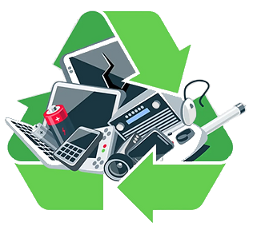
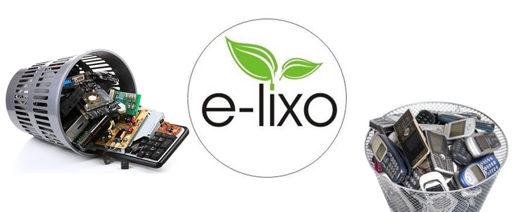

O que é a TI verde? A TI verde diz respeito à reunião de estratégias focadas em minimizar os efeitos da
tecnologia no meio ambiente. Essas estratégias, ao serem adotadas por uma empresa, podem evitar desperdícios
de recursos com equipamentos, softwares e energia elétrica.
E embora o principal benefício da TI verde seja preservar o meio ambiente, ela reflete diretamente em outras
vantagens para a empresa, como reduzindo custos no departamento e tornando o ambiente tecnológico mais seguro.
É importante para as organizações se manterem atentas à TI verde, pois o setor tecnológico já é conhecido por
causar danos ambientais, então, essas práticas devem acometer principalmente as empresas que o foco do processo
é a produção de TI.
Para entender como a TI verde vai além da economia de energia e envolve toda cadeia produtiva de uma
organização,
desde a extração de materiais até o descarte, apresentamos a seguir algumas abordagens e níveis de implementação
dessa modalidade.
O Nosso Objetivo
O nosso objetivo principal é concientizar as mentes das pessoas a ter um habito mais saudavel com o
meio ambiente, fazendo que não so a minoria mais sim todos a fazer o que é certo para o nosso mundo.
Isso permite diminuir os impactos das tecnologias no meio ambiente e otimizar as despesas, tornando o consumo
mais
consciente.
O objetivo da TI Verde é promover a adoção de práticas sustentáveis na área de Tecnologia da Informação,
visando a redução
do impacto ambiental das operações e infraestrutura tecnológica. Isso inclui a otimização do consumo de
energia, a minimização do
descarte de resíduos eletrônicos, a promoção do uso eficiente de recursos naturais e a busca por soluções
tecnológicas que sejam
mais amigáveis ao meio ambiente. O propósito é alinhar a tecnologia com os princípios da sustentabilidade,
contribuindo para a
preservação do meio ambiente e a mitigação das mudanças climáticas.
Reciclagem de Eletrônicos
A reciclagem de eletrônicos é fundamental para diminuir ou amenizar os danos
causados pela indústria. Mas você sabe o que é lixo eletrônico?

Lixo eletrônico, Resíduos de Equipamentos Elétricos e eletrônicos (REEE) ou e-lixo são termos utilizados
para se referir a
equipamentos elétricos e eletrônicos. Apenas quando suas partes e acessórios foram descartados por seus
proprietários, sem a
intenção de utilizá-los.
As tecnologias do mundo moderno possibilitam que novos aparelhos sejam lançados e novas tendências surgem
rapidamente no mercado.
Em um processo planejado que leva o consumidor a substituir seus produtos eletrônicos sem necessidade. Assim,
gerando um volume
cada vez maior de lixo eletrônico.

Obsolescência Programada
Esse fenômeno, chamado de obsolescência programada, contribui significativamente para o aumento do lixo
eletrônico.
Assim, pode causar diversos impactos ambientais e para a saúde humana se descartado de maneira incorreta.
De acordo com o relatório The Global E-Waste Monitor, produzido pela ONU em 2017, o Brasil produz em média
1,5 milhão
de toneladas de lixo eletrônico por ano. No mundo, foram gerados o equivalente a 4,5 mil Torres Eiffel de lixo
eletrônico
(44,7 milhões de toneladas) nesse mesmo ano. Até 2021, a previsão é que esse número suba para 52,2 milhões de
toneladas por ano.
Os equipamentos elétricos e eletrônicos possuem diversos componentes tóxicos em suas estruturas. Se
descartados de maneira
incorreta, esses resíduos tóxicos podem contaminar o solo e os lençóis freáticos, colocando em risco a saúde
pública.
Segundo o Centro de Tecnologia Mineral (CETEM), cerca de 70% dos metais pesados encontrados em lixões e
aterros sanitários
controlados são provenientes de equipamentos eletrônicos descartados incorretamente.
Um estudo do Centro de Ecologia Ann Arbor, pesquisou 36 celulares de diferentes marcas e modelos. Os
pesquisadores estavam
analisando a quantidade de componentes tóxicos presente nos aparelhos, como chumbo, bromo e cádmio. São
elementos que desde
sua extração até o fim da vida útil causam potenciais danos ao meio ambiente e à saúde humana.
Como é feita a Reciclagem?
Chegada dos itens descartados na recicladora
Imagem: big bags com lixo eletrônico que será reciclado
Os eletroeletrônicos, pilhas e baterias portáteis sem utilidade, ou o chamado lixo eletrônico, chega nas
instalações
em big bags, caixas de papelão ou em bombonas plásticas.
Triagem
Imagem: equipe realiza a triagem dos materiais descartados
Os produtos que chegam passam por um separação. A equipe que participa do processo realiza a triagem por
tipo de produtos,
em que os eletrônicos, de acordo com suas especificidades, são separados das demais impurezas. Cada material
terá a sua
destinação correta, mas serão processados em grupos diferentes.
Imagem: separação de pilhas e baterias
A separação e triagem de pilhas e baterias desempenham um papel fundamental na reciclagem de materiais
eletrônicos,
contribuindo significativamente para a prática da TI Verde, que busca reduzir o impacto ambiental da
tecnologia.
Pilhas e baterias são componentes comuns em dispositivos eletrônicos, alimentando desde controles remotos
até laptops
e smartphones. No entanto, quando não descartados corretamente, esses pequenos dispositivos podem
representar uma grande
ameaça ao meio ambiente devido a materiais tóxicos que contêm, como chumbo, mercúrio, cádmio e outros metais
pesados.
Trituração e Separação
Imagem: a partir da reciclagem de cabos é possível extrair metais e PVC
Após a triagem, uma máquina de última geração faz automaticamente a trituração e separação dos materiais
presente nos eletroeletrônicos.
São diversas etapas que por densidade de cada elemento facilitam o processo de reaproveitamento e destinação
final específica para a
matéria-prima extraída.
A tecnologia para fazer a reutilização dos metais preciosos presentes, ainda que em pequena quantidade, nos
eletroeletrônicos ainda
não foi implementada no Brasil. Por isso, as recicladoras fazem a trituração de placas e as encaminha para
empresas europeias para
que sejam reutilizadas em outras indústrias, como por exemplo as de jóias.
Imagem: o resultado da trituração dos metais presentes em celulares
Destinação Final
Com as matérias-primas separadas e trituradas é a hora de as levar para as indústrias que vão produzir
novas mercadorias, que variam
desde novos eletroeletrônicos até assoalhos e cimento.
Desta forma, as empresas podem diminuir a extração de recursos naturais e preservar o nosso planeta ao mesmo
tempo que garantem
uma fonte inesgotável de matérias-primas. Entenda mais sobre a mineração urbana aqui.